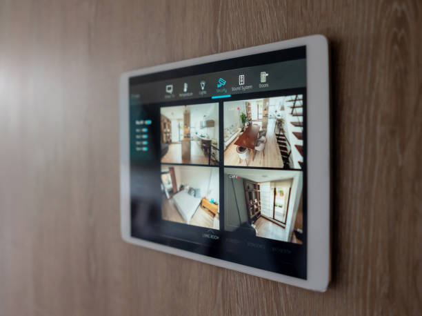

Enhance your safety with top-tier home security systems in West Virginia Wv. Protect your home with cutting-edge technology and real-time alerts.
Click Here To Call Us (877) 848-1711In today’s fast-paced world, ensuring the safety of your home is more crucial than ever. As a homeowner, finding reliable home security systems near West Virginia Wv can be overwhelming. Our team specializes in bringing you cutting-edge security solutions tailored to meet your specific needs. We understand that proximity matters, which is why we offer local expertise combined with a variety of customizable home security systems. Our commitment to excellence ensures that your home is protected with state-of-the-art technology, including smart home features and easy-to-use installations. With our extensive experience in the industry and a focus on customer satisfaction, we are the best choice for securing your loved ones and belongings.
Embrace the convenience of modern technology with our wireless home security systems . Gone are the days of cumbersome wires and complicated setups. Our wireless systems offer flexibility and ease of installation while providing robust security features. These systems include motion detectors, door/window sensors, and security cameras that communicate seamlessly with your mobile devices. With our expertise in wireless technology, we ensure that your security system is not only effective but also scalable, allowing for future enhancements as your security needs evolve. Choose us for our commitment to innovation, affordability, and reliable 24/7 monitoring services that give you peace of mind while safeguarding your home.
When it comes to protecting your home, selecting the best home security company can make all the difference. Our reputation as one of the top home security companies is built on our dedication to customer service, cutting-edge technology, and comprehensive security solutions tailored to your needs. We offer a diverse range of services, from alarm systems to video surveillance, all backed by a team of trained professionals committed to providing support and maintenance. Our systems are designed to integrate smoothly with your lifestyle, ensuring that you receive alerts and have control over your security at all times. Trust us to provide quality, reliability, and peace of mind with our expertly designed security packages.
Protecting your home shouldn’t break the bank. At our company, we believe in making safety accessible, which is why we offer some of the most affordable home security systems in West Virginia Wv. Our budget-friendly packages ensure that every homeowner can find a solution that fits their financial needs without compromising quality. We pride ourselves on transparency, with no hidden fees, basic equipment options, and flexible monitoring plans. Our experienced team works with you to design a customized security plan that provides maximum protection at minimal costs. Choose us for affordable peace of mind, knowing your home and family are safeguarded by professionals who care.
Discover the future of home safety with our smart home security systems in West Virginia Wv. Integrating the latest in Internet of Things (IoT) technology, our smart security solutions provide you with unparalleled control and visibility of your home environment. Imagine being able to remotely monitor your home, lock your doors, or receive real-time alerts—all from your smartphone. Our expertise in smart home technology ensures that your system is not only efficient but also seamlessly integrates with existing smart devices. With us, you gain access to innovative security features, user-friendly interfaces, and commitment to keeping your home protected 24/7, making us your go-to choice for smart security systems.
Home alarm systems are the cornerstone of residential security, providing immediate alerts in the event of a breach. In West Virginia Wv, our investment in top-of-the-line alarm technology allows us to deliver systems that are both user-friendly and highly effective. We provide a variety of alarm options, including intrusion alarms, glass break detectors, and smoke alarms, giving you comprehensive coverage. Our skilled technicians ensure that your system is installed properly and is functioning optimally, providing you with unwavering peace of mind. Trust us to protect your home with advanced alarm systems that keep you and your family safe, day and night.
Security camera installation is essential for anyone seeking a proactive approach to home security. Our team in West Virginia Wv specializes in seamlessly integrating security cameras into your home, providing real-time surveillance and recording capabilities. Our cameras offer high-resolution video, night vision, and remote viewing options, allowing you to monitor your property from anywhere. Our commitment to excellence and our extensive experience in the field make us the preferred choice for security camera installation within the community. With our professional installation services, you can enhance your home's safety while enjoying peace of mind knowing that your property is always under watchful eyes.
Choosing the right home security monitoring services can make all the difference in protecting your home. Our monitoring services offer 24/7 surveillance and rapid response times, ensuring that help is always just a phone call away. We are equipped with cutting-edge technology to monitor alerts and ensure your system performs optimally at all times. Whether you're at home or away, you can trust us to keep an eye on your property and respond to emergencies swiftly and efficiently. Our reputation for reliability in home security monitoring is well-known, and we’re proud to be a trusted name .
Securing your home should be straightforward and effective, and our residential security systems in West Virginia Wv are designed precisely with that goal. We offer a range of options tailored to meet the unique challenges of residential properties. Our systems include intrusion detection, video surveillance, and fire alarms, all monitored 24/7. Our experienced team ensures a hassle-free installation process and provides thorough follow-up support, making us the go-to choice for residents seeking a comprehensive security solution. We pride ourselves in delivering peace of mind, knowing your home is secure against any threats.
The installation of your security system is just as important as the system itself. Our home security systems installation services in West Virginia Wv ensure that your equipment is set up according to the highest standards. Our certified technicians are experienced in all aspects of security installations, adhering to best practices while catering to your specific requirements. We offer a comprehensive installation process, from assessing your property and designing a customized security layout, to executing the installation with minimal disruption to your home life. Our commitment to quality means that you can depend on our systems to work perfectly from the day of installation forward. Choose us for a seamless and professional installation experience, delivering results you can count on for years to come.
For those who enjoy a hands-on approach, our DIY home security systems offer the perfect blend of simplicity and effectiveness. We understand that some homeowners prefer to take charge of their own security. That's why we provide high-quality, user-friendly systems that can be installed without professional help. Our comprehensive kits come with clear instructions and support, enabling you to configure your system exactly how you want it. With a variety of options, including cameras, sensors, and alarms, you have the flexibility to integrate components that suit your lifestyle. Trust us to provide quality products and support that empower you to protect your home on your terms.
Elevate your home security with systems that include comprehensive camera integration. Our home security systems with cameras combine cutting-edge surveillance technology with alarm features for an all-encompassing security solution. With crystal-clear video feeds, night vision capabilities, and motion-sensing alerts, these systems ensure you have visibility over your home at all times. Our experienced team will work with you to create a personalized security layout, ensuring optimal placement for all cameras. By choosing us, you benefit from state-of-the-art equipment, professional installation, and ongoing support, ensuring your family and possessions are under constant protection.
Video surveillance systems form the backbone of effective home security. Our video surveillance systems provide homeowners with peace of mind through advanced monitoring capabilities. Our products include high-definition cameras that capture clear footage in various environments—indoors, outdoors, day or night. Many of our systems support remote access so that you can monitor your property from anywhere in the world. Our team specializes in recommending and installing the best video surveillance solutions tailored to your specific needs. Count on us for exceptional service and support, ensuring the safety of your home and loved ones with the latest in video surveillance technology.
Home automation security systems provide convenience and safety, making them an ideal choice for homeowners . By integrating your security measures into a smart home ecosystem, you can manage everything from locks and alarms to lights and cameras remotely. Our home automation solutions allow you to customize your security settings and receive instant alerts, ensuring you always stay informed about your property’s status. Our expert team will work with you to implement a seamless system that enhances your lifestyle while keeping your home secure. Experience the future of home security with our automated solutions tailored specifically for the needs of homeowners .
Motion sensor security systems are an essential component of modern home security. Our motion sensors are designed to detect movements around your property, triggering alerts and notifications whenever unexpected activity occurs. Installed strategically throughout your home, these sensors work in conjunction with alarms and cameras to provide a layered defense system. Our team in West Virginia Wv brings expertise in effectively positioning and installing motion sensors that cater to your environment, maximizing their efficiency. Trust our professional service to deliver home security that intelligently adapts to your lifestyle and ensures your peace of mind around the clock.
Just like any system, regular maintenance is crucial for optimal performance. Our security system maintenance services ensure that all components of your security system function seamlessly over time. Our trained technicians specialize in comprehensive assessments, routine checkups, and prompt repairs. We understand that a malfunctioning system can compromise your home’s safety, which is why we prioritize quick responses to maintenance requests. By choosing us for your security system upkeep, you can rest easy knowing that your investment is protected, functioning correctly, and upgraded according to the latest security standards.
Professional home security installation is crucial to achieving an effective and reliable security system. We specialize in providing professional installation services in West Virginia Wv, ensuring all aspects of your security system are set up correctly and tailored to your specific needs. Our technicians carry extensive training and expertise, which allows us to assess your property accurately and recommend the best solutions. When you trust us with your home security installation, you can be confident that your system will perform flawlessly, giving you the safety and peace of mind you deserve.
Choosing local home security providers gives you the advantage of personalized service and community investment. Our company is proud to be one of the leading local home security providers focusing on building relationships with our customers. We understand the specific needs and concerns of our local community, allowing us to create tailored solutions that fit the unique security landscape of the area. Our expertise, dedication to customer service, and commitment to using the best technology make us the perfect choice for home security in your neighborhood. Trust us to keep your home safe—locally rooted and committed to excellence.
Streamline your home security setup with our comprehensive home security packages in West Virginia Wv. We recognize that every home has unique security needs, which is why we offer customizable packages tailored to fit different lifestyles and budgets. Whether you are looking for basic protection or advanced technology integration, we provide packages that cater to everyone. Our packages include essential components such as alarms, sensors, cameras, and monitoring services, ensuring all your security bases are covered. Trust our expertise to guide you toward the best home security solutions available, bringing you the best value in a single cohesive offering.
Burglar alarm installation is vital for protection against intruders, and our team specializes in providing effective alarm solutions. We offer state-of-the-art burglar alarm systems designed to alert you and law enforcement right away when a breach is detected. Our experienced technicians ensure that your system is properly installed and tested, providing you with a reliable layer of defense against potential intruders. With options that include remote monitoring and smart home integration, we can personalize your alarm installation to suit your lifestyle perfectly. Choose our burglar alarm installation services and gain the peace of mind that comes from knowing your home is safeguarded at all times.
Security systems for apartments require specific consideration due to unique challenges, and we excel in offering solutions tailored to these needs. Our company is committed to providing effective security systems for residents in West Virginia Wv who want to enhance their apartment's safety. We offer a variety of solutions, including wireless systems, cameras, and smart home technology designed to fit even the smallest spaces. Our professional team understands the nuances of apartment living, enabling us to recommend the best strategies for securing your residence. Trust us to provide effective and efficient security solutions that leave you feeling safe and secure in your apartment.
Transform your existing security setup into a more robust defense system with our home security upgrades in West Virginia Wv. Whether your needs have evolved, or advancements in technology have emerged, our professional team is here to enhance your home’s protection. We conduct thorough assessments to identify vulnerabilities and recommend the best upgrades, from integrated surveillance to smart home enhancements. With us, you receive expert recommendations and professional installations, ensuring a seamless upgrade process that rejuvenates your home security experience. Trust us to help you maintain safety standards as technology advances.
Remote home monitoring systems allow homeowners to keep an eye on their property from anywhere, anytime, offering crucial peace of mind. Our remote monitoring solutions in West Virginia Wv provide flexibility and ease of use, empowering you to check in on your home through your smartphone or devices. With real-time alerts sent directly to you, you can respond promptly to any events, deterring potential intruders before they can act. Our team is dedicated to installing and configuring your remote monitoring system, ensuring seamless integration with your existing security measures. Choose us for your remote home monitoring needs and enhance the security of your premises with ease.
Renters face distinct security needs that differ from those of homeowners. That’s why we offer specialized home security systems for renters . Our solutions are designed to fit your living situation without requiring permanent alterations, making them ideal for rented properties. We provide lightweight, easy-to-install systems that won’t damage walls or windows, yet deliver top-tier protection. Our commitment to affordability ensures that you don’t overspend while securing your space. Count on us to provide flexible security solutions that protect your belongings, giving you peace of mind even in temporary living arrangements.
Safety is a priority that knows no hours, which is why our 24/7 home security monitoring services are your best line of defense against potential threats. Our round-the-clock monitoring ensures your home is always under vigilant supervision by trained professionals who can react swiftly to any unforeseen incidents. With real-time alerting systems and direct communication with emergency services if necessary, you can have confidence that help is just a moment away. By choosing our monitoring services, you not only secure your home but also engage with a company that prioritizes your security and peace of mind.
Years Experience
Expert Technicians
Satisfied Clients
Compleate Projects
Yes, Safer Choice Home Security offers professional installation services in West Virginia Wv, ensuring that your security system is set up properly and efficiently.
Safer Choice Home Security offers backup battery solutions to ensure your system continues to function during power outages in West Virginia Wv, keeping your home secure at all times.
Safer Choice Home Security offers a variety of home security alarms in West Virginia Wv, including burglar alarms, fire alarms, carbon monoxide detectors, and medical alert systems.
Safer Choice Home Security has been providing top-notch home security services in West Virginia Wv for over [X] years, gaining a reputation for reliability and exceptional customer service.
Safer Choice Home Security offers both contract and no-contract options for monitoring services in West Virginia Wv, so you can choose the plan that works best for you.
Yes, Safer Choice Home Security offers a free consultation in West Virginia Wv to assess your home security needs and recommend the best solutions for you.
Safer Choice Home Security serves all areas within West Virginia Wv, providing security solutions for both residential and commercial properties throughout the region.
Yes, Safer Choice Home Security offers commercial security solutions in West Virginia Wv, including surveillance cameras, access control, and 24/7 monitoring to protect your business.
24/7 monitoring by Safer Choice Home Security in West Virginia Wv provides peace of mind knowing that a team of experts is constantly monitoring your home for any signs of intrusion or emergency.
Safer Choice Home Security offers a range of top-rated home security systems, including burglar alarms, smart cameras, and 24/7 monitoring services to ensure the safety of your property in West Virginia Wv.